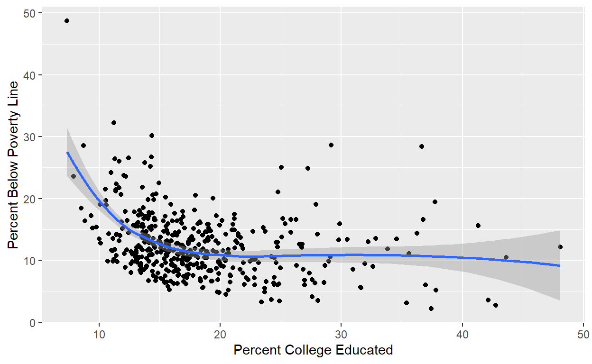

Intro
You’ve learned a lot about how to make static plots you can show to people. These are nice because they allow you to perfectly control what people see. But their major limitation is the same: they require you to choose ahead of time exactly what people see.
Sometimes you may want your readers to be able to interact with your data visualizations (or tables). Maybe you want, for example, to let someone scroll over a specific point or bar and get more information about it. Or here, where hovering over a state highlights a line showing its obesity trend over time. This looks very slick and modern! Much more impressive than a simple static graph.RIP science is changing
These sort of interactive data presentations are already very common in, for example, in business analytics dashboards like those made in Tableau. They’re becoming more common every day in other areas, too.
Packages
As usual we need to load a few packages. We need
tidyverse because we’re still going to be using many of its
functions for data manipulation and plotting. And since this Tutorial is
all about interactive plots with plotly, hopefully it’s no
surprise we need to load that, as well.
# Load (and, if necessary, first install) packages
pacman::p_load(tidyverse, plotly, gapminder, RColorBrewer)Motivating Example
Have you at least looked at HW2 (hopefully so)? One of the things I
ask you to do with the midwest data frame is to identify
the name of an outlier county in your scatterplot of county-level
college attendance and poverty. To find the county name with the skills
you had then you actually had to open the data frame and go manually
searching for the counties matching the values of the outlier points. It
was a massive pain! Later you’ll learn skills like filter()
that will help you do this in a script in a more automated way, but
allow me to show you a different solution with plotly.
Here’s a static version of our midwest college-poverty
plot:
ggplot(data = midwest, mapping = aes(x = percollege, y = percbelowpoverty)) +
geom_point() +
geom_smooth() +
labs(x = "Percent College Educated", y = "Percent Below Poverty Line")## `geom_smooth()` using method = 'loess' and formula = 'y ~ x'
And here’s an interactive version we could build with
plotly:
plot_ly(midwest, x = ~percollege, y = ~percbelowpoverty) %>%
add_markers(color = I("black"),
text = ~paste0('County: ', county, ', ', state))Now it’s much easier to find the names of interesting outlier counties for further research, isn’t it?
plotly Overview
Unfortunately, as you probably noticed from the above example
plot_ly() uses a somewhat different syntax from
ggplot(). So we’ll have to learn a new “grammar” for
producing interactive plots. Fortunately there is some overlap, so
learning plot_ly() should be substantially easier than your
first time with ggplot(). Some of the major differences
include:
plot_ly()uses a different pipe%>%all the way through, never the+operator to add more layers.plot_ly()uses the term trace whereggplot()would use geom or layer- You create new layers/traces on charts using
add_XX()rather thangeom_XX(). For example, to add a scatterplot player you useadd_markers()rather thangeom_point()
- You create new layers/traces on charts using
If you don’t tell it an explicit chart type,
plot_ly()will try to guess the type of plot you want based on the type of data provided or other default settings. Note you should probably just always tell it a chart type to avoid this confusion!When specifying aesthetics you no longer need to place them inside
aes(), but you do need to precede the variable name with~plot_ly()useslayout()rather thantheme()to customize many elements of a plot such as the legendplot_ly()doesn’t have an explicitgroup =aesthetic. You have to either usegroup_by()on a data frame before callingplot_ly()OR use a grouping aesthetic likecolor =soplot_ly()will implicitly create the groups for you (SEE the section on line plots below)plot_ly()has different defaults for itsgeom_bar()equivalent
But there are also some big similarities:
plot_ly()also paints graphs in layers (it just calls them traces), which you add similarlyGlobal and local aesthetics work quite similarly, and you add colors and text in much the same way as with
ggplot()
Our First Interactive Plot: Scatterplots
As noted above, like plotly also draws plots in layers.
It starts with an empty canvas:
# Empty plotly graph
plot_ly()Note that as mentioned above, since plot_ly() isn’t
given a plot type it tries to figure one out and settles on a
scatterplot (defined as a “‘scatter’ trace” with the
mode “markers”).
We can see that it’s actually trying to do this by feeding it a
simple x and y value:
# Slightly less empty plotly graph
plot_ly(x = 2, y = 2)We could also ask for this more explicitly using the code below:
# Slightly less empty plotly graph
plot_ly() %>%
add_markers(x = 2, y = 2)Note two things: 1. We used a pipe %>% instead of
+ to add a layer; 2. We used add_markers() to
tell plot_ly() to “add” a trace of type “marker” (a
scatterplot, in plot_ly() speak).
Let’s do a more useful plot: a scatterplot of gdpPercap
and lifeExp from gapminder:
# Gapminder scatterplot
plot_ly(data = gapminder) %>% # First specify data = <DATA FRAME NAME>
add_markers(x = ~ gdpPercap, # Specify the x aesthetic maps to ~ <VARIABLE NAME> (in this case, gdpPercap)
y = ~ lifeExp) # Specify the y aesthetic maps to ~ <VARIABLE NAME> (in this case, lifeExp)Global vs. Local Aesthetics
Note the code above uses the “local aesthetics” method you used in
ggplot() to specify the X and Y aesthetics only for that
specific add_markers() trace. What if you
wanted to map these globally for all layers of the graph (that
is, on all layers have X be gdpPercap and Y be
lifeExp), though?
Challenge: Alter the above code to produce the
same plot but with X and Y defined globally for all
layers rather than specific to a single layer. HINT: It works just like
in ggplot().
Mapping Additional Variables
What if we wanted to color the points by continent? Can you figure
out how to do that? Once again, it’s pretty much just like in
ggplot()!
Challenge: Try to further alter the above code to color the plot’s points by continent. Do this before looking below.
Changing Colors in plot_ly()
One of the super nice things about plot_ly() is it has
those RColorBrewer schemes built in! If you don’t remember
these schemes review that section in Tutorial 1.3 or check out the
palettes below:
display.brewer.all()
To change to one that’s appropriate for your graph you simply specify
the desired palette in the colors = argument:
# Gapminder scatterplot
plot_ly(data = gapminder,
x = ~ gdpPercap,
y = ~ lifeExp,
color = ~ continent,
colors = "Dark2") %>% # Use the "Dark2" ColorBrewer palette
add_markers()Try playing around with palettes until you find one you like.
As indicated on the plot_ly() help page
(Challenge: Do you remember how to pull that up in RStudio?
Try it now!) the colors = argument also lets you specify a
color ramp or a manual vector of colors (either names like
"gray" or RBG vectors like rgb(195, 195, 195).
For more details on how to specify these I will refer you to this
post.
Interactive Line Plots and Specifying Traces
Let’s try and make a line plot of how gdpPercap
(adjusted for inflation) changes over time in every country in the
gapminder data frame:
# Line plot of per capita GDP by country
plot_ly(data = gapminder,
x = ~ year,
y = ~ gdpPercap,
color = ~ country) %>%
add_lines() # This is what you use to make a line plotWith so many countries we get a very messy-looking splash of colors
(the default Set2 palette split into 142 different shades
rather than the designed 8) and an absurdly long legend. Let’s make
three changes to the above: 1. Make all lines the same color (the
default muted blue), 2. Remove the legend using layout(),
and 3. Make the lines thinner so they’re more easily differentiated at
the bottom
# Line plot of per capita GDP by country
plot_ly(data = gapminder,
x = ~ year,
y = ~ gdpPercap,
color = ~ country,
colors = "#1f77b4") %>% # 1. This is the hexadecimal code for plot_ly()'s default muted blue
add_lines(size = I(0.3)) %>% # 3. We have to use I(0.3) to make R/plot_ly() evaluate it as a single number 0.3 rather than mapping to a variable.
# If this doesn't make much sense to you right now it's OK. Just trust me.
layout(showlegend = FALSE) # 2. Remove the legendThe layout() function allows you to do many
customizations of the non-data portions of the graph you would have done
with theme() in ggplot().
How much did removing the legend impact your ability to read and gain
insights from the chart? Maybe not as much as you think! Try rolling
your mouse over each line. Because you still asked it to
color = by country, plot_ly() has still
implicitly grouped everything by country and displays that information
when you hover over it.
Interactive Bar Charts and Histograms
Histograms
In ggplot(), you use geom_histogram() to
specify a histogram. In plot_ly(), you similarly use
add_histogram().
# Histogram of weight of diamonds
plot_ly(data = diamonds,
x = ~ carat) %>%
add_histogram()Specifying Traces: add_XX()
vs. add_trace()
There are two basic ways to specify what kind of trace you want to add:
Using
add_XX(), where XX is the trace type you want to addUsing the more general and flexible
add_trace()withtype =and possiblymode =arguments to indicate the type of trace you want to add
The two code blocks below produce identical output:
# Line plot of per capita GDP by country
plot_ly(data = gapminder,
x = ~ year,
y = ~ gdpPercap,
color = ~ country,
colors = "#1f77b4") %>%
add_lines(size = I(0.3)) %>%
layout(showlegend = FALSE)# Line plot of per capita GDP by country
plot_ly(data = gapminder,
x = ~ year,
y = ~ gdpPercap,
color = ~ country,
colors = "#1f77b4") %>%
add_trace(type = "scatter", # In plot_ly() speak, this line plot is actually of type "scatter" but with "lines" instead of "markers" (points)
mode = "lines",
size = I(0.3)) %>%
layout(showlegend = FALSE)Usually I would recommend going with method 1 (specify the desired
chart type using add_XX()), but if you look for help online
you might see things written using method 2, so I wanted you to be aware
of how it might look. Some less common or more heavily customized chart
types may also require you to use the more general and flexible
add_trace().
Specifying Multiple mode =s
To get certain types of plots you’ll need to specify “multiple” modes
by using two names with a + between them. This is
particularly common with traces of
type = "scatter". It has three possible modes:
lines, markers, and text. But
that means there are actually 7 different types of charts you
can produce with any combination of 1, 2, or all 3 of these. For
example, to get lines with points we could do the following:
# Line plot of per capita GDP by country
plot_ly(data = filter(gapminder, country %in% c("China", "India", "United States")),
x = ~ year,
y = ~ gdpPercap,
color = ~ country,
colors = "#1f77b4") %>%
add_trace(type = "scatter", # In plot_ly() speak, this line plot is actually of type "scatter" but with "lines" instead of "markers" (points)
mode = "lines+markers") %>%
layout(showlegend = FALSE)Note the text option adds text to each point instead of
a marker. It doesn’t really work well for this graph, but…
Challenge: For a bit of practice, try replacing the
markers above with text that is the name of the country. Note to do this
you will need to also specify
text = ~ <VARIABLE NAME> to indicate the text you
want at each point.
Bar Charts
Here is where there are some differences between
ggplot() and plot_ly(). In
ggplot(), if you use geom_bar() R will by
default also try and count the number of observations in each level of a
categorical x variable - quite similar to a histogram. You
may recall if you want it to display an actual value in the data
associated with some level/value/bucket of x, you have to
specify the stat = "identity" transformation.
In plot_ly(), add_bars() works like
geom_bar() with stat = "identity". In other
words, it wants to map the height or length of the bar not to a count,
but to a value in the data frame by default. Thus it requires you to
specify what value that is as a y aesthetic.
See if you can figure out how to produce an interactive bar chart of
the number of diamonds in each category of cut with
plot_ly() below. If you can’t figure it out after a few
minutes, you can check the solution.
# Generate counts of diamonds by cut, then plot a bar graph
diamonds2 <- diamonds %>%
count(cut)
diamonds2
# Bar chart of diamonds by cut
plot_ly(________) %>%
add_XXX()# Generate counts of diamonds by cut, then plot a bar graph
diamonds2 <- diamonds %>%
count(cut)
diamonds2
# Bar chart of diamonds by cut
plot_ly(data = diamonds2,
x = ~ cut,
y = ~ n) %>%
add_bars()Advanced plot_ly() Techniques
Highlighting and Subsetting Data by Users
So far we’ve only talked about interactivity in the form of hovering
over data of interest and getting more information. But
plot_ly() allows your users to interact with your plots in
some other ways, as well. Specifically, they can select and zero in on
subsets of the data. You can do this using the legend by default (if you
use one), OR using the data on the plot itself with just a little added
work.
Highlighting With Legends
One way to do this is using the legend. Let’s go back to an earlier
scatterplot of gdpPercap and lifeExp, split by
continent.
# Gapminder scatterplot
plot_ly(data = gapminder,
x = ~ gdpPercap,
y = ~ lifeExp,
color = ~ continent,
colors = "Set2") %>%
add_markers()Here are some ways your, by default:
As we’ve already seen, hover over data points for more information
Double-click on a continent name in the legend to highlight just those data points. Double-click a second time to go back to showing everything.
After the original double-click, you can single-click on other continents to gradually add them back to the plot individually, too.
Single-click on a continent name to remove that group from the plot. Single-click again to put it back.
Highlighting With the Data Itself
But what if you don’t have a legend? For example, if you want someone to be able to select any 1 of your 142 countries, but you don’t want to list all 142 countries in a legend? This requires just a little additional work.
Let’s work with a plot of lifeExp over time.
# Line plot of per capita GDP by country, with highlighting capabilities
gapminder %>%
highlight_key(~ country) %>% # Must be the line *right before* plot_ly()
plot_ly(x = ~ year,
y = ~ lifeExp,
color = ~ country,
colors = "#1f77b4") %>%
add_lines() %>%
layout(showlegend = FALSE) %>%
highlight()Notice a few things about the above code:
We had to pass
gapminderthrough a function calledhighlight_key(~ <VARIABLE NAME>). This functions sort of likegroup_by(); it sets the subgroups of data your user can select. In this case, we want to allow them to select any individual country to see the progression of its life expectancy.CRITICAL: This must be the last thing you write just before passing data to
plot_ly(). Don’t worry about why for now, but if you don’t do this things won’t work correctly!You also need to add
highlight()to yourplot_ly()codeYour users can now, by default:
Single-click on a country’s data point (not anywhere on the line, just near a point/year with data) to highlight that entire country’s line and fade the others out.
Single-click on another country’s line to switch what’s highlighted
Shift+Single-click on another country’s line to add that country to your highlighting
Double-click to remove all highlighting and return to normal
These behavioral triggers can be customized. Check out the
on = and off = arguments in the help page for
highlight(). Play around with them a little bit in the code
above.
A more detailed accounting of everything you can do with highlighting, selecting, and user interactivity is available in Chapter 16 of this free online book, if you’re interested.
Challenge: Alter the above graph so you can highlight single lines by simply placing your cursor over them, rather than clicking.
Challenge: Who are the two countries with the seemingly large life expectancy drops after 1970. Highlight them. Does your knowledge of relatively recent world history help you explain these drops? Why do we see them? What do they represent? Do a little Googling if you need.
Modifying Tooltip Hovertext
So far we’ve mostly allowed plot_ly() to just use its
default settings for what information it displays when you hover over a
point with your mouse/cursor (tooltip hovertext). The
only time we made customizations was in our original motivating example
with the midwest data. Let’s dig into this more now.
By default, plot_ly() shows up to 4 things as part of
the hovertext, if each is applicable:
The value of
xThe value of
yThe content of a
textparameter, if one is specifiedThe name of the trace if more than one is used to plot the data.
For example, if the data is grouped by color each color is actually considered a separate trace - which is why you get the country name displayed by default next to the line plots of
gdpPercapover time.
You can change this in two main ways:
Specify the elements you want included with the
hoverinfo =argument. By default this isx+y+text+name. By dropping any of these you can delete that information from the hovertext.Specify the exact text you want to show by altering the
text =argument
To see these in action, let’s revisit a slightly-modified version of
our midwest example, which should make more sense now:
# Scatterplot of Midwestern county-level education and poverty data
plot_ly(midwest,
x = ~percollege,
y = ~percbelowpoverty) %>%
add_markers(color = I("black"),
text = ~paste0('</br>County: ', county, # Display "County: <COUNTY NAME>" on one line, then
'</br>State: ', state), # "State: <STATE NAME>" on the next
hoverinfo = "text") # ONLY display the info we specify in text =We used the HTML tag </br> to indicate we want a
line break between the county name and state name. In our earlier
motivating example we used a COUNTY, STATE format. Both are fine - I
just wanted to show you each. It’s a matter of personal preference!
Challenge: Try modifying the code below to have the hovertext contain a sensible display of the country name, continent name, and year of each data point that does not repeat any information.
# Classic plot of gdpPercap vs. life expectancy
plot_ly(data = gapminder,
x = ~ gdpPercap,
y = ~ lifeExp,
color = ~ country,
colors = "#1f77b4") %>%
add_markers() %>%
layout(showlegend = FALSE)# Classic plot of gdpPercap vs. life expectancy
plot_ly(data = gapminder,
x = ~ gdpPercap,
y = ~ lifeExp,
color = ~ country,
colors = "#1f77b4",
text = ~paste0('Country: ', country,
'</br>Continent: ', continent,
'<br>Year: ', year),
hoverinfo = "text") %>%
add_markers() %>%
layout(showlegend = FALSE)
# OR
plot_ly(data = gapminder,
x = ~ gdpPercap,
y = ~ lifeExp,
color = ~ country,
colors = "#1f77b4",
text = ~paste0('Continent: ', continent,
'<br> Year: ', year),
hoverinfo = "text+name") %>%
add_markers() %>%
layout(showlegend = FALSE)A more detailed accounting of everything you can do is available in Chapter 25 of this free online book.
Animation
Another interactive element plot_ly() supports is
animations (at least for traces of type = scatter).
The simplest way to do this is by specifying
frame = <VARIABLE NAME> and, if necessary and
appropriate, ids = <VARIABLE NAME> arguments. This
creates a separate “frame” for each value of the indicated variable, and
then cycles through those frames with a smooth transition where each
value transitions from one frame to another within the indicated
ids variable. Behold:
# Classic plot of gdpPercap vs. life expectancy
plot_ly(data = gapminder,
x = ~ gdpPercap,
y = ~ lifeExp,
text = ~ paste0('Country: ', country)) %>%
add_markers(frame = ~ year, # Create one "frame" of the plot for each value of year
ids = ~ country) %>% # Causes points to transition from frame to frame within countries
# In other words, Kuwait 1952 slides to Kuwait 1957, and so on
layout(showlegend = FALSE)You can also define frames with categorical variables. This is useful if, rather than having users play an animation, you want to allow them to select different subsets of the data to view on your plot. For example, we could create an “animation” by continent:
# Classic plot of gdpPercap vs. life expectancy
plot_ly(data = gapminder,
x = ~ gdpPercap,
y = ~ lifeExp,
text = ~ paste0('Country: ', country)) %>%
add_markers(frame = ~ continent, # Create one "frame" of the plot for each value of continent
ids = ~ country) %>% # Keeping this ID prevents misleading transitions
layout(showlegend = FALSE)Your users can select the continent from which they want to see the country data.
One thing to be cautious about here is creating misleading animations. Click play on the above graph. There is still a smooth transition, but the points don’t “slide” from one spot to another like they did above. This is good! Countries don’t exist on more than one continent in the way they do in more than one year.
Challenge: But try deleting the ids =
argument above. How does the plot animate now? Think about whether and
how this could be misleading.
Challenge: An alternative even if you deleted the
ids = argument above is to specify you want
plot_ly() to do something other than its default smooth
transitions. You can accomplish this by using the code
animation_opts(transition = 0) as a new line.
(transition = 0 simply removes any transitions.) Try it
above! Do you like this any better than the original? Again, it’s a
personal/stylistic preference!
If you’re interested, for far more details on making animations in
plot_ly() you can read Chapter 14 of this free
online textbook.
You can also do animations in ggplot() using the
gganimate package! Here is a very
basic introduction. Here
are some more examples, including how to create an animation that
“draws” a line graph live by gradually revealing more and more data over
time! And here
is an example of how to animate a football play in R using
gganimate!
Summary
Congratulations! You now know a little more than the basics - though
still aren’t an expert in - plot_ly(). Now you can create
graphics your users can interact with, rather than mere static plots.
Pretty cool, right?
We’ve barely scratched the surface of what we can do with
plotly. For more information I would recommend Googling
specific thigns you want to do or taking a look at this free online book. Some
of it is likely too advanced for some of you, but it should help with
the basics. Plus it’s the definitive bible of plotly so I’m
including it here.
Up next, you’re going to learn how to build interactive apps in R
using shiny. So more neat stuff is on the horizon before we
get into the vegetables of data cleaning.